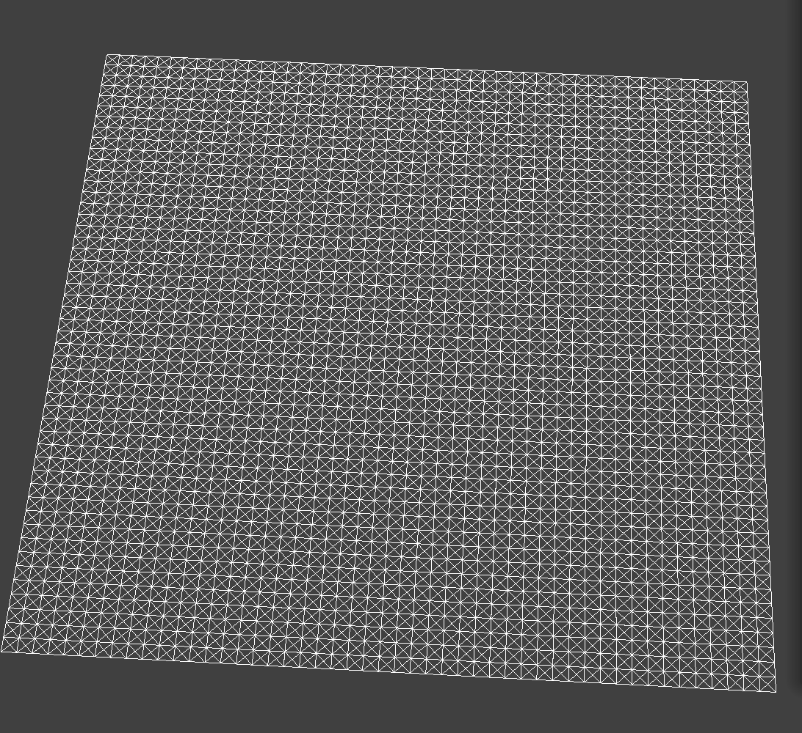
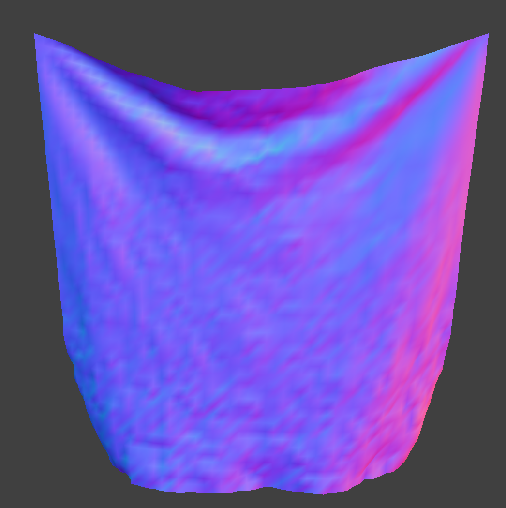
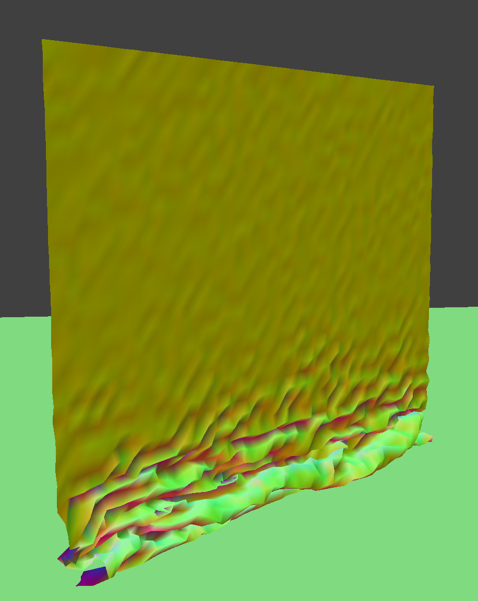
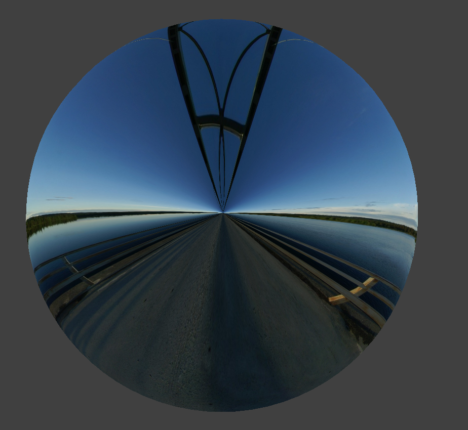

CS 184: Computer Graphics and Imaging, Spring 2023
Project 4: Cloth Simulator
Michael Huang, CS184-The Fish
Overview
In this project, we made a realistic cloth simulator using springs and pointmasses. Using classical dynamics, we create realistic physics that simulates cloth falling on objects and self collisions. Later, we apply shaders on the objects so we can get some cool affects such as lighting and textures.
Part 1: Masses and springs
In this part, we build a grid system of masses and springs, each of equal distance apart. First, we create a grid of pointmasses, each with equal mass. Next, we create springs, connecting each pointmass. For every pointmass 1 unit away above and to the left, we create a structural spring. For every pointmass 1 unit away diagonally to the left and diagonally to the right, we create a shearing spring. For every pointmass 2 units to the left and 2 units above, we create a bending spring.
Take some screenshots of scene/pinned2.json from a viewing angle where you can clearly see the cloth wireframe
to show the structure of your point masses and springs.
|
|

Initial configuration (ks = 5,000)
|

|
|
Show us what the wireframe looks like (1) without any shearing constraints,
(2) with only shearing constraints, and (3) with all constraints.
|
No shearing constraints
|
|
Only shearing constraints
|
|
All constraints
|
Part 2: Simulation via numerical integration
We now compute the physics on each point mass using Newton's classical mechanics. We first calculate the global acting forces (such as gravity) on each pointmass. We then calculate the forces applied by each pairwise pointmass, calculated as:
$$F_s = k_s (||p_a - p_b||_2 - l)$$
Where $k_s$ is the spring constant, $p_a, p_b$ is the position of both pointmasses, and $l$ is the rest length.
We then use Verlet Integration to calculate the new positions of the pointmass. We use the classical position equation to calculate the next position:
$$x_{t + dt} = x_t + v_tdt + a_t dt^2$$
and approximate $v_t = x_t - x_{t - dt}$. Simplifying terms, and adding a damping term to simulate friction, loss from heat, our final equation becomes:
$$x_{t + dt} = x_t + (1 - d)(x_t - x_{t - dt}) + a_tdt^2$$
Lastly, we constrain the length of the spring to be at most 10\% more than the original rest position. If both positions, are non-pinned, this is caculated as:
$$p_a = \max(0, ||p_a - p_b||_2 - 1.1l)\frac{(p_b - p_a)}{||p_b - p_a||_2} + p_a$$
$$p_b = \max(0, ||p_a - p_b||_2 - 1.1l)\frac{(p_a - p_b)}{||p_a - p_b||_2} + p_b$$
Experiment with some the parameters in the simulation.
To do so, pause the simulation at the start with P, modify the values of interest, and then resume by pressing P again.
You can also restart the simulation at any time from the cloth's starting position by pressing R.
From a very low spring constant, we can see that there is very little structure in the cloth, because there is barely any acting force in the cloth. With the initial configuration, we can see some structure, while with high ks, we can see that there is a lot of force being applied on the cloth, making it much more rigid.
|
Low Ks
|
Initial configuration
|
High density
|
|
With density, we can see that the cloth is heavier over larger densities. With low density, we can see that gravity is not affecting the cloth as much, where as in the initial and high density, we can see that gravity affects the cloth much more. The cloth looks much heavier in the high density picture.
|
Low density
|
Initial configuration
|
High density
|
|
Damping affects the physics of the cloth over time. With low damping, there is no loss of friction in the simulation, as seen in low damping, constantly oscillating back and forth. With intial configuration, it is normal and goes into rest. With high damping, the cloth goes into rest quickly since the damping is high, as seen in the middle of the animation.
|

Low damping
|
Initial configuration
|
 High damping
High damping
|
|
The most interesting difference I noticed was with density. I didn't expect density to affect the cloth that much, but it actually affects the looks of the cloth drastically.
|
Default Parameters
|
Default Parameters
|
|
Show us a screenshot of your shaded cloth from scene/pinned4.json in its final resting state!
If you choose to use different parameters than the default ones, please list them.
Part 3: Handling collisions with other objects
In part 3, we handle collisions spheres and planes. To handle collision with spheres, we first check if the current pointmass has intersected the sphere. To do that, we simply check if the pointmass is inside the radius of the sphere:
$$||p_m - c||_2 \leq R$$
If it has intersected, we find where pointmass would hav intersected the sphere. We do this by shooting a ray from the origin of the sphere toward the pointmass, and solve for the intersection point on the surface of the sphere. This is done by solving:
$$((p_m - c)t + c - c)^2 - R^2 = 0$$
$$t^2 = \frac{R^2}{||p_m - c||_2^2}$$
$$t = \frac{R}{||p_m - c||_2}$$
Next, we do compute the correction vector to be applied to the pointmass's last position, then apply the correction with friction:
$$x_t' = x_t + (1 - f)((p_m - c)t - x_{t - dt})$$
To check if a pointmass has intersected a plane, we do something similar to the sphere. We first check if the pointmass has intersected the hyperplane by checking the current position and the last position. If the last position is on a different side of the hyperplane than the current position, then the pointmass has intersected the hyperplane. Recall that a hyperplane is made up of a vector normal $n$ and a point in the hyperplane $p$. We can check intersection if:
$$sign((x_t - p)^Tn) \neq sign((x_{t - dt} - p)^Tn)$$
where $sign$ denotes whether it is above or below 0. We get the intersection point by doing:
$$t = \frac{(p - x_t)^Tn}{||n||_2^2}$$
Finally, using $t$, we do the same thing as in the sphere, calculating the correction vector, and updating the position.
Show us screenshots of your shaded cloth from scene/sphere.json in its final resting state
on the sphere using the default ks = 5000 as well as with ks = 500 and ks = 50000.
|
ks = 500
|
Initial configuration (ks = 5,000)
|
ks = 50,000
|
|
We can see that for different lower ks, the cloth is much more drapier with less structure, whereas when we increase it, it becomes more rigid.
Show us a screenshot of your shaded cloth lying peacefully at rest on the plane.
If you haven't by now, feel free to express your colorful creativity with the cloth!
(You will need to complete the shaders portion first to show custom colors.)
Part 4: Handling self-collisions
Self collisions are somewhat more complicated. The naive solution would take $O(N^2)$ time, since we would have to check the distance of each point mass to every other point mass. Thus, we use the hashmap approach. We first partition the 3D space into 3D boxes of size $w = 3 * width / num\_width\_points, h = 3 * height / num\_height\_points, t = max(w, h)$. For each point, we map it to one of these boxes in 3D space, and map said box as a unique hashcode. This way, for each point, we can simply match it to a hashcode and grab the list of points inside that box, making the average runtime much better than $N^2$.
Show us at least 3 screenshots that document how your cloth falls and folds on itself,
starting with an early, initial self-collision
and ending with the cloth at a more restful state (even if it is still slightly bouncy on the ground).
|
Self collision 1
|
Self collision 2
|
Self collision 3
|
|
When we vary density, we can see the cloth falls harder as we increase the density of the cloth, as seen in the more wrinkled structure. For spring constant, as we increase the spring cosntant, the force applied on both directions is now higher. Thus, a lower spring constant will allow more wrinkles to form because of the less structured nature, while a higher spring constant will allow for more strucutred falling.
|
$\text{density} = 1$
|

$\text{density} = 50$
|
|
$\text{ks} = 1,000$
|
$\text{ks} = 7,500$
|
Part 5: Cloth Sim
Shaders are a special transformation that is applied in the GPU all at once. For every RGB value, we apply some transformation given the position and the RGB value. The shader will output a new RGB value. Examples are this can be from rgb that is affected from light, a texture mapping, or even a mirror mapping. There are two flavors of the shader, the vertex shader and the fragment shader. The vertex shaders reads in all vertex values, and writes all vertex values. These per-vertex values are then interpolated using barycentric coordinates. The fragment shader is responsible for writing all per-pixel values. It takes in the vertex input, and outputs the final color of the pixel. We need both in the pipeline to create our per-pixel color values for something like Blinn-Phong.
In Blinn-Phong shading, we attempt to represent lighting from a light source using an ambient component, diffuse component, and a specular component. The ambient component represents energy from other bounces of light. The diffuse component represents direct sources of light. The specular component represents angled sources of light.
|
Ambient component only
|
Diffuse component only
|
|
Specular component only
|
Complete Blinn-Phong model
|
Show a screenshot of your texture mapping shader using your own custom texture by modifying the textures in /textures/.
In bump mapping, we use the vertex positions and the texture component to change the normal of the light to make it look like there's bumps on the cloth and the sphere. In displacement mapping, we do something similar. Instead of changing the normal though, we change the actual position of the vertex itself according to the texture. When we change the coarsness of the mesh, we can see that the images are more higher resolution, compared to the coarser model.
|
Bump Mapping on the Cloth
|
Bump Mapping on the Sphere
|
|
|
Displacement Mapping on the Sphere
|
Displacement Mapping on the Sphere (coarser mesh)
|
|
Show a screenshot of your mirror shader on the cloth and on the sphere.
|
Mirror Shader on the Cloth
|

Mirror Shader on the Sphere
|
|
Explain what you did in your custom shader, if you made one.